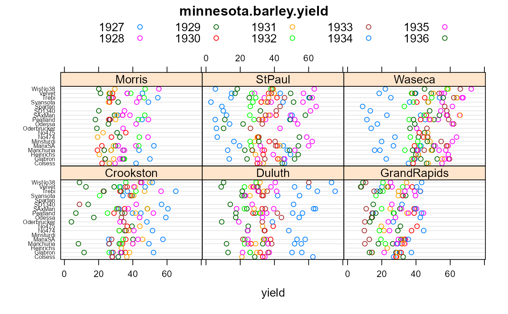

minnesota.barley.yield.RdThis is an expanded version of the barley data that is often used to illustrate dot plots.
A data frame with 647 observations on the following 4 variables.
yieldyield in bu/ac
gengenotype (variety) factor
yearyear
sitesite factor, 6 levels
The lattice package contains a smaller version of this data for
the years 1931 and 1932.
The following comments are in reference to the mentioned source documents.
Notes about Immer (1934).
The University Farm location is at the city of Saint Paul.
This source provides the yield data for each of the three blocks at each location in 1931 and 1932. The following registration numbers and names are given:
| C.I. number | Variety name |
| Minn 184 | Manchuria |
| Minn 445 | Glabron |
| Minn 440 | Svansota |
| Minn 447 | Velvet |
| Minn 448 | Trebi |
| Minn 457 | Manchuria x Smooth Awn |
| Minn 462 | Smooth Awn x Manchuria |
| Minn 452 | Peatland |
| Minn 475 | Svanhals x Lion |
| Minn 529 | Wisconsin No 38 |
Notes about Harlan (1935):
The 1931 yields match the average values of Immer (1934).
The Minnesota 474 and 475 cultivars are both 'Svanhals x Lion' crosses.
No yields are reported at Crookston in 1928 because of a crop failure. (Page 20)
Also, in the report for North Dakota it says "the zero yields at Williston, ND in 1931 were caused by drought". (Page 31)
Notes about Wiebe (1940):
The 1932 data generally match the average values from Immer (1934) with the following notes.
The data for Glabron at St Paul in 1932 are missing, but given as 36.8 in Immer (1934). This value is treated as missing in this R dataset.
The data for Svansota at Morris in 1932 are missing, but given as 35.0 in Immer (1934). This value is treated as missing in this R dataset.
The yield for 'Wisconsin 38' at St Paul in 1932 is shown as 3.80, but 38 in Immer (1934). The latter value is used in this R dataset.
The yields for No475 in 1932 are not reported in Wiebe (1940), but are reported in Immer (1934).
No yields are reported at Morris in 1933 and 1934, because of a crop failure owing to drought.
Notes about Hayes (1942).
This sources gives the block-level yield data for 5 cultivars at 4 sites in 1932 and 1935. Cultivar 'Barbless' is the same as 'Wisconsin No38'.
H V Harlan and P R Cowan and Lucille Reinbach. (1935). Yields of barley varieties in the United States and Canada, 1927-1931. United States Dept of Agriculture. http://naldc.nal.usda.gov/download/CAT86200440/PDF
Gustav A. Wiebe, Philip Russell Cowan, Lucille Reinbach-Welch. (1940). Yields of barley varieties in the United States and Canada, 1932-36. United States Dept of Agriculture. http://books.google.com/books?id=OUfxLocnpKkC&pg=PA19
Immer, R. F. and H. K. Hayes and LeRoy Powers. (1934). Statistical Determination of Barley Varietal Adaptation. Journal of the American Society of Agronomy, 26, 403-419.
Hayes, H.K. and Immer, F.R. (1942). Methods of plant breeding. McGraw Hill.
Kevin Wright. (2013). Revisiting Immer's Barley Data. The American Statistitician, 67, 129-133. http://doi.org/10.1080/00031305.2013.801783
library(agridat) data(minnesota.barley.yield) dat <- minnesota.barley.yield dat$yr <- factor(dat$year) # Drop Dryland, Jeans, CompCross, MechMixture because they have less than 5 # year-loc values dat <- droplevels(subset(dat, !is.element(gen, c("CompCross","Dryland","Jeans","MechMixture")))) # 1934 has huge swings from one loc to the next libs(lattice) dotplot(gen~yield|site, dat, groups=yr, main="minnesota.barley.yield", auto.key=list(columns=5), scales=list(y=list(cex=.5)))